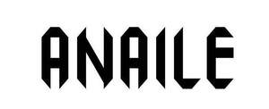

Trade Mark Journal No.2025/031 1 August 2025
UK00004224240 25 June 2025 (9,14,18,25,26,28)
Mark 1
Mark 2

- Class 9
- Sunglasses; Lenses for sunglasses; Cases for eyeglasses and sunglasses; Frames for sunglasses; Sunglasses frames; Fashion sunglasses; Straps for sunglasses; Sunglass lenses; Chains for spectacles and for sunglasses; Eyewear; Glasses; Frames for eyeglasses; Spectacles [glasses]; Fashion eyeglasses; Anti-glare glasses; Boxes [cases] for sunglasses; Replacement lenses for glasses; Glasses frames; Frames for glasses; Sports glasses; Glasses for sports; Sports eyewear; Ski glasses; Motorcycle goggles; Plastic lenses; Smart glasses; Eyewear cases; Glasses cases; Helmets for use in sports; Sports helmets; Sports goggles.
- Class 14
- Jewellery; Jewellery items; Jewellery products; Jewellery boxes; Leather jewelry boxes; Items of jewellery; Cufflinks; Boxes for cufflinks; Lapel pins [jewellery]; Bracelets [jewellery]; Watchbands.
- Class 18
- Bags; Carrying bags; Cross-body bags; Luggage, bags, wallets and other carriers; Crossbody bags; Leather bags; Canvas bags; Belt bags; Clutch bags; Shoe bags; Wheeled bags; Messenger bags; Travel bags; Bags for travel; Leather bags and wallets; Garment bags; Shoulder bags; Reusable shopping bags; Courier bags; Gym bags; Bags for carrying pets; Bags [envelopes, pouches] of leather, for packaging; Bags [envelopes, pouches] for packaging of leather; Bags [envelopes, pouches] of leather for packaging; Hand bags; Travelling bags; Cabin bags; Flight bags; Mesh shopping bags; Suit bags; Sports bags; Bags for sports; Holdalls for sports clothing; Carriers for suits, shirts and dresses; Carriers for suits, for shirts and for dresses.
- Class 25
- Clothing; Jackets [clothing]; Knitwear [clothing]; Ready-to-wear clothing; Woolen clothing; Furs [clothing]; Linen clothing; Gloves [clothing]; Gloves as clothing; Clothes; Jerseys [clothing]; Denims [clothing]; Shorts [clothing]; Cashmere clothing; Leather clothing; Clothing of leather; Silk clothing; Parts of clothing, footwear and headgear; Hoods [clothing]; Embroidered clothing; Belts [clothing]; Belts for clothing; Casual clothing; Jackets being sports clothing; Stuff jackets [clothing]; Bottoms [clothing]; Playsuits [clothing]; Infant clothing; Leisure clothing; Ties [clothing]; Clothing for sports; Sports clothing; Drawers [clothing]; Athletic clothing; Clothing for children; Clothing for babies; Tops [clothing]; Clothing for skiing; Men's clothing; Footwear; Sneakers [footwear]; Insoles for footwear; Footwear soles; Soles for footwear; Athletic footwear; Footwear for snowboarding; Footwear for sports; Footwear for women; Casual footwear; Footwear for men; Leisure footwear; Insoles for shoes and boots; Shoes; Children's footwear; Shoes for leisurewear; Infants' footwear; Footwear not for sports; Ladies' footwear; Sneakers; Snowboard shoes; High-heeled shoes; Sport shoes; Leather shoes; Athletic shoes; Tongues for shoes and boots; Shoes for casual wear; Hats; Baseball hats; Fashion hats; Bucket hats; Baseball caps and hats; Sports caps and hats; Ski hats; Beach hats; Bonnets [headwear]; Scarves; Scarfs; Snoods [scarves]; Headwear; Head scarves; Headbands; Waistcoats [vests]; Fur coats and jackets; Sweaters; Fingerless gloves as clothing; Knit jackets; Fur jackets; Shirts; Cashmere scarves; Jumpers [sweaters]; Sports jerseys and breeches for sports; Sports jackets; Clothes for sports; Sports jerseys; Sports shirts; Headbands for clothing; Linings (Ready-made -) [parts of clothing]; Gloves for apparel; Underwear; Briefs [underwear]; Sweat-absorbent underclothing [underwear]; Trunks [underwear]; Undergarments; Underwear for women; Men's underwear; Underclothes; Long underwear; Panties; Ladies' underwear; Lingerie; Knickers; Pants; Trousers shorts; Jogging bottoms [clothing]; Thongs; Underclothing; Pajamas; Undershirts; Corsets [underclothing]; Socks and stockings; Jogging pants; Leather pants; Braces [suspenders] for clothing / Suspenders [braces] for clothing; Trousers; Baby pants; Swimsuits; Beach clothes; Sweatpants; Jackets; Fleece jackets; Leather jackets; Wind-resistant jackets; Waterproof jackets; Sheepskin jackets; Sleeveless jackets; Quilted jackets [clothing]; Bomber jackets; Motorcycle jackets; Padded jackets; Camouflage jackets; Snowboard jackets; Ski jackets; Reversible jackets; Heavy jackets; Down jackets; Casual jackets; Stuff jackets; Dinner jackets; Track jackets; Overcoats; Vests; Gilets; Sweatshirts; Outerwear; Blazers; Leather waistcoats; Coats of denim; Denim coats; Leather belts [clothing]; Shirts for suits; Jumpsuits; Overshirts; Hooded sweatshirts; Hoodies; Tracksuits; Sweatsuits; Tracksuit bottoms; Tracksuit tops; Open-necked shirts; Tank-tops; Short-sleeved T-shirts; Hooded sweat shirts; Balaclavas; Leisurewear; Sport shirts; Rugby shirts; Jackets (Stuff -) [clothing]; Long-sleeved shirts; Soccer shirts; Leggings [trousers]; Gabardines [clothing]; Uniforms; Sleeveless jerseys; Jogging outfits; T-shirts; Jerseys; Sportswear; Waistcoats; Bodysuits; Gymwear; Dress shirts; Parkas; Suede jackets; Athletic uniforms; Polo shirts; Cardigans; Jogging sets [clothing]; Neckties; Neckwear; Bowties; Ascots (ties); Cravats; Suits; Dress suits; Bathing suits; Jogging suits; Sweat suits; Ski suits; Women's suits; Snow suits; Jump Suits; Three piece suits [clothing]; Ski suits for competition; Snow boarding suits; Dresses; Dress shoes; Men's and women's jackets, coats, trousers, vests; Bathing costumes for women; Tuxedos; Sports socks; Sports pants; Sports bras; Sports singlets; Sports garments.
- Class 26
- Brooches [clothing accessories]; Buckles [clothing accessories]; Belt buckles [clothing accessories]; Accessories for apparel, sewing articles and decorative textile articles; Interchangeable accessory set for shoes, not of metal.
- Class 28
- Sports equipment; Skateboards [recreational equipment]; Sports balls; Balls for sports; Balls for racket sports.
ANAILE LTD